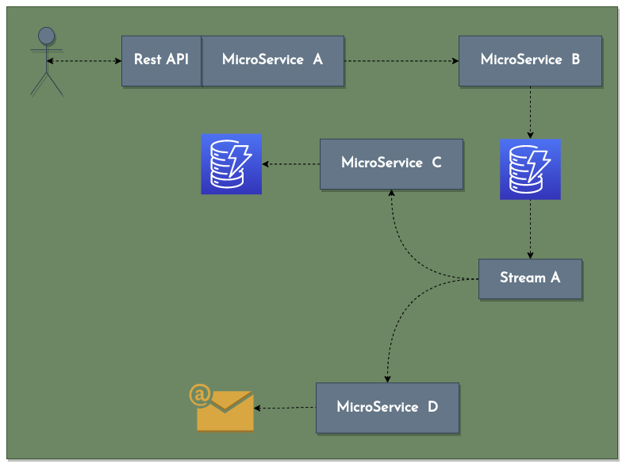

Hi everyone!
My name is Jairo
from pydantic import BaseModel
class Speaker(BaseModel):
name: str
last_name: str
current_position: str
website: str
years_experience: int
interests: str
education: str
def say_hello(self):
print("Hello Everyone")
jairo: Speaker = Speaker(
name="Jairo Andres",
last_name="Castañeda Pacheco",
years_experience=12,
current_position="Senior Backend Engineer, Payments at Simetrik",
interests="FinTech | AWS | Severless | Cloud Computing",
education="System engineer - Universidad Francisco de Paula Santander",
website="https://jairoandres.com"
)
me.say_hello()
About me
from pydantic import BaseModel
class Speaker(BaseModel):
name: str
last_name: str
current_position: str
website: str
years_experience: int
interests: str
education: str
def say_hello(self):
print("Hello Everyone")
me: Speaker = Speaker(
name="Jairo Andres",
last_name="Castañeda Pacheco",
years_experience=12,
current_position="Senior Backend Engineer, Payments at Simetrik",
interests="FinTech | AWS | Severless | Cloud Computing",
education="System engineer - Universidad Francisco de Paula Santander",
website="https://jairoandres.com"
)
me.say_hello()
Transactional architecture
Hybrid architecture

Event driver architecture
The typical day in the lifetime of the programmer is 90% debugging and 10% writing code
What will happen if?

We need Telemetry
Telemetry
El arte de monitorear correctamente, consiste en enterarse que algo fallo, antes de que se entere el cliente
Telemetry
- Data emit for other system
- handle, transform, store and presentation
Pillars
How it works?
Two Questions
Why AWS Lambdas?